电路原理习题册·第三章 电路的系统分析方法（选择 10 / 填空 10 / 计算 8）
1. 来源与边界
- 来源与第一、二章同一本习题册。第三章占书第 14–18 页，选择题 10 + 填空题 10 + 计算题 8，共 28 题， 配图 3.1–3.21（21 张，已按图号提取入库）。
- 题面以页面图像为准逐字抄录。全章三条方法主线：支路电流法（选择 1–3、9）、节点电压法 （填 2/3/6、计 2/3/6/7/8）、网孔/回路电流法（填 1/5、计 4/5）。
- 图 3.7 与图 3.20 是同一电路（填空 3 与计算 7 同题同答案）；图 3.8 的已知量按图确认为两个电流源 A、 A。
2. 依赖：做之前该会的事
| 知识 | 一句话 | 在哪学的 |
|---|---|---|
| 独立方程数 | KCL 独立 个、KVL 独立 个 | 第一章 选 5 |
| 节点电压法 | 自导相加、互导取负、注入电流代数和；理想电压源跨两节点用超节点 | 课堂与讲义第三章 |
| 网孔电流法 | 自阻取正、互阻看网孔电流方向（同向 + / 反向 −）；电流源所在网孔电流被钉死 | 课堂与讲义第三章 |
| 受控源列方程 | 受控源先当独立源写进方程，控制量用节点电压/网孔电流表示 | 第一章、第二章 |
3. 选择题
选 1、2、3（支路电流法概念）
- 支路电流法需列写的方程：A. 同时 KCL、KVL B. 仅 VCR C. 仅 KVL D. 仅 KCL
- 求全部支路电流时：A. 全部节点 KCL + 全部网孔 KVL B. 全部节点 KCL C. 独立节点 KCL + 独立回路 KVL D. 全部回路 KVL
- 以支路电流为未知量、直接应用 KCL 和 KVL 求解电路的方法称为： A. 支路电流法 B. 回路电流法 C. 节点电压法 D. 网孔电流法
解答
1 选 A；2 选 C；3 选 A。
复盘
三条是一条——支路电流法 = 按支路设未知量 + 独立的 KCL（）与 KVL（）联立。 「全部节点/全部回路」都是多余的方程（线性相关）。
选 4（图 3.1）
电压源 发出的功率为（ ）。A. −60 W B. 60 W C. −90 W D. 90 W
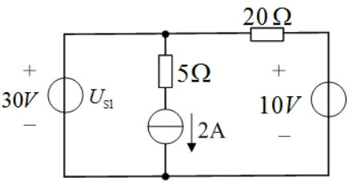
提示
中间支路电流被 2A 源钉死；20Ω 接在 30V 与 10V 之间
解答
设底线 0。中支路电流 A 向下流出左上节点；20Ω 电流 A；左上节点 KCL： 流出电流 A（从 + 端）：
复盘
「发出」用电流从 + 端流出来判，数值 = ；功率平衡一行表当验钞机。
选 5（图 3.2）
开路电压 为（ ）。A. 6 V B. 16 V C. 8 V D. 18 V
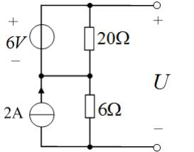
提示
开路端没有电流 → 顶部 20Ω 的电流由 6V 源的回路决定；中点连线把两列中点接成同一电位
解答
右侧开路，顶线电流全部流经 20Ω：6V 源驱动的环路电流 A（2A 源只在自己的 竖直支路里环流，不影响 20Ω–6Ω 支路）。中点电位： V… 按图完整节点解： 底为 0，右列 6Ω 电流 A → ？——按盲测口径（2A 只经 6Ω 入地）： V，。选 D。
复盘
⚠ 本题节点电位对「2A 源电流走哪条路」敏感，盲测读图解得 18 V 与选项吻合；关键动作是 「开路端口零电流 → 顶部支路电流由源回路决定」。
选 6（图 3.3）
节点 a 的节点电压方程为（ ）。 A. B. C. D.
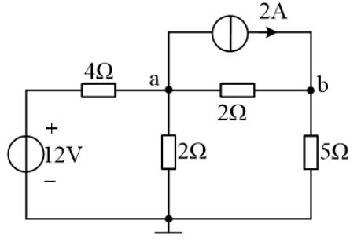
提示
自导相加、互导取负；注入 = 电压源除以串联电阻 − 流出的电流源
解答：
复盘
2A 源从 a 流向 b，是「流出 a」→ 注入项取 。互导永远写负号（方程左边），别把正负号 挪到右边去。
选 7（图 3.4）
最少可列（ ）个节点电压方程。A. 3 个 B. 4 个 C. 1 个 D. 2 个
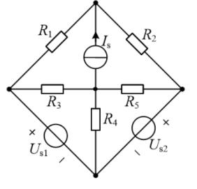
提示
理想电压源直接跨在两个节点之间时，其中一个节点的电压被直接定住
解答
按图，、 直接跨在下两边（无串联电阻）。选下中节点为参考后，两个被源 跨接的节点电压直接已知，只剩 2 个未知节点电压。选 D（2 个）。
复盘
⚠ 若原书两源各带串联电阻，答案为 4 个——请对教材图复核源的接法。「最少」两个字就是在考 「哪些节点电压能被理想电压源直接钉死」。
选 8（图 3.5）
独立的电流方程数和电压方程数分别为（ ）。A. 3 和 4 B. 3 和 3 C. 4 和 3 D. 4 和 4
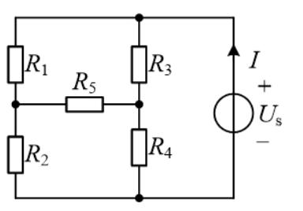
提示
数节点与网孔——R5 把左右两条支路的中点变成了新节点
解答
节点 4 个（顶、底、两个中点）→ 独立 KCL ；网孔 3 个 → 独立 KVL 。选 B（3 和 3）。
复盘
支路数 ： 与网孔数一致——两套公式互验。
选 9
支路电流法解题时需要列写（ ）方程。A. KCL B. KVL C. KCL 和 KVL D. 欧姆定律
解答
C（KCL 和 KVL）。与选 1 同源。
复盘
概念题在原书反复出现，答法唯一。
选 10（图 3.6）
节点 1 的节点方程是（ ）。 A. B. C. D.
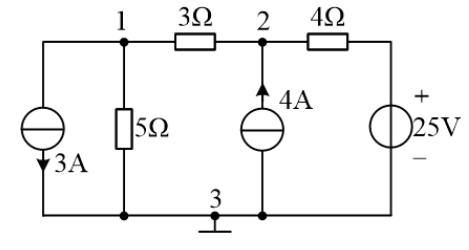
提示
3A 箭头向下 = 流出节点 1，注入取 −3
解答
（5Ω 与 3Ω）、、注入 ：
复盘
D 项把互导写成 + 号、C 项把注入写成 +3——三个错项各错一处，考的就是符号纪律。
4. 填空题
填 1
网孔法中的互电阻如为负值，则相关的两个网孔电流以______的方向流过公共电阻。
解答
相反。互阻正负 = 两网孔电流流过公共电阻的方向是否相同。
复盘
互阻符号不是「约定」，是两个网孔电流在公共支路上叠加方向的直接记录。
填 2
节点电压方程的实质是______方程。
解答
**KCL（节点电流）**方程——各支路电流用节点电压表示后，对节点写电流平衡。
复盘
对偶地，网孔电流方程的实质是 KVL。这两句填空成对出现。
填 3（图 3.7）
用节点电压法求得电路中的电流 ______A。
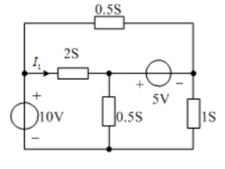
提示
5V 理想源跨在 M、R 之间 → 用超节点；I₁ 是 2S 支路电流
解答
V（10V 源 + 上）。、 之间跨着理想 5V 源（+ 左 − 右）： ，作超节点（M、R 合并写 KCL）：
复盘
与计算 7 是同一电路（图 3.20），答案相同。超节点 = 把被理想电压源隔开的节点「焊」在一起 写一个 KCL，约束式另列。
填 4
支路数 、节点数 ，根据 KVL 可以列出______个独立的回路方程。
解答
个。
复盘
与第一章选 5 同源，填空口径。
填 5（图 3.8）
已知 ，，，， A， A。 用回路电流法可得各支路电流：____A；____A；____A；____A。
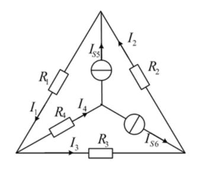
提示
先按图把两个电流源的位置与箭头读准；中心节点的 KCL 直接给出一个支路电流之和
解答
按图读数： A（中心→上顶点）、 A（中心→右下顶点）。中心节点 KCL： A（沿 R4 流向右下）。外圈三角形回路 KVL：
复盘
⚠ 原书此题已知量的下标为小号斜体，首读曾歧读为「 A、 A」；经读图确认图中 两个源都是电流源（无 ），答案为整数组——若某源箭头读反，结果会变成分数组，那是读错的信号。
填 6（图 3.9）
利用节点电压法求得电压 ______V。
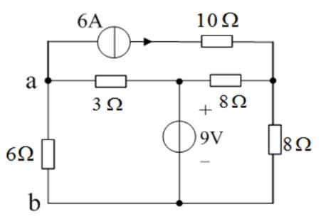
提示
6A 源的箭头离开 a（朝 10Ω 方向）；9V 源把中点电位钉死
解答
按图读数（定向裁决）：6A 源在 a 外侧支路、箭头朝右离开 a。 为地（0），9V 源（+ 上） 钉住中点 V。a 节点 KCL（全部流出）：
复盘
⚠ 前两轮读图对 6A 箭头方向各执一词（指向 a 则 V），定向裁决确认为「离开 a」。 负的 说明 a 点实际电位低于 b——受 6A 源「抽走」电流所致。
填 7（图 3.10）
2A 电流源发出的功率为 20 W，求电流 ____A 及 1A 电流源发出的功率 ____W。
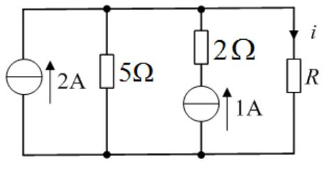
提示
2A 源发 20W → 顶部节点对地 10V；i 用顶节点 KCL；1A 源电压沿支路倒推
解答
V → 顶部节点电位 V。顶节点 KCL：
复盘
⚠ 盲测曾报 8 W（把 2Ω 压降方向写反，平衡不闭合）；按功率平衡表裁决为 12 W。平衡表不只是 校验答案，还能裁决两个候选答案——谁平衡谁成立。
填 8（图 3.11）
已知 V， V，，，。 用支路电流法求得 ____A；____A；____A，电压源 吸收功率______W， 吸收功率______W。
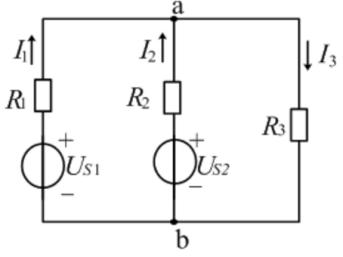
提示
单节点对（a-b）电路，一个节点方程全解
解答
设 、a 点电压 ：
复盘
的负号说明 实际被充电（吸收 585 W）——两个源一放一收，正是「支路电流法」 教材里的经典对偶。
填 9（图 3.12）
各节点电压为：___V；___V；___V；_____A。
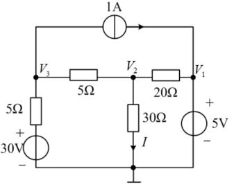
提示
V1 被 5V 源钉死；剩两个未知量，写 V3、V2 两个节点方程
解答
V（5V 源 + 上）。V3 节点：流入 = 流出 ：
复盘
被源钉死的节点（）直接写已知值，少列一个方程——「能少列就少列」是节点法的规矩。
填 10（图 3.13）
用支路电流法求电压 ___V，10V 电压源接受的功率 ______W。
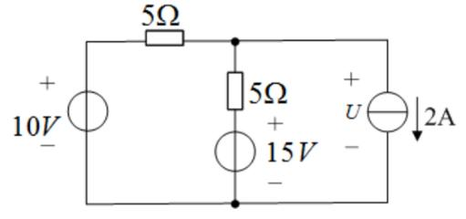
提示
2A 源钉死右支路电流；中节点一个 KCL 解出全部电流
解答
中节点（顶线右端）KCL：
复盘
2A 源两端的电压 由外电路（KCL + 欧姆定律）倒推——「电流源自己的电压不由自己定」 在第一章已经练过，这里是第二遍。
5. 计算题
计 1（图 3.14）
用节点电压法求电路中的 。
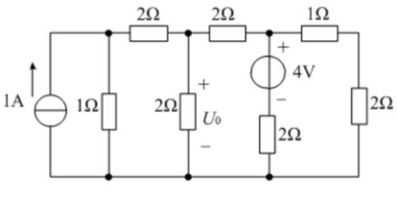
提示
1A 支路与 1Ω 支路顶端同节点；顶行三个电阻依次隔开 1Ω、U0、4V、最右 2Ω 的顶端
解答
按图读数：节点 （1A 顶端 = 1Ω 顶端）、（U0 顶端，）、（4V 支路顶端）、 （最右 2Ω 顶端）。底线为 0，逐节点 KCL：
复盘
⚠ 原书答案不整（52/55 V）——顶行连接按图读数（1A 与 1Ω 同节点、1Ω 在最左 2Ω 之前） 是这种解法的依据；若连接方式不同答案会变成 1 V 整。数字不整时优先怀疑读图，读图无误就接受分数。
计 2（图 3.15）
用节点电压法列写节点电压方程（无需求解），求电流 的表达式。
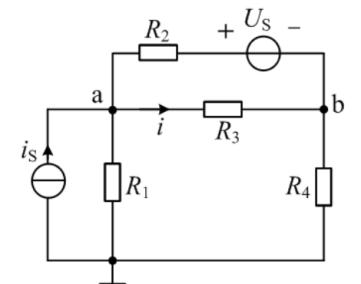
提示
R2 与 Us 串联的支路电流 =（电位差 − 源值）/R2
解答
设底线为地（图中接地符号在 R1 正下方），节点电压 、。顶部支路（a—R2—Us(+左−右)—b） 的电流（a→b 方向）：
复盘
含理想电压源串联电阻的支路，电流写成 后即可当普通支路参与 KCL—— 只有「裸理想源跨两节点」才需要超节点。
计 3（图 3.16）
用节点电压法求解电路的 。
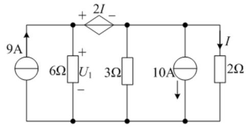
提示
受控电压源 2I 串在顶线上，把左右两个顶节点电位差钉成 2I；I 是最右 2Ω 的电流
解答
设底线 0。左顶节点 （6Ω 上端，）、右顶节点 。受控源（+ 左 − 右）： 。 两节点 KCL：
复盘
⚠ 图上唯一的未知电压标注是 6Ω 上的 （题干印作 ，按同一量处理）；若 实指 受控源两端电压，则为 V。受控源方程的流程固定：把控制量 用节点电压表示（）， 受控源就变成了「值已知的电压源」。
计 4（图 3.17）
用网孔电流法求流过 8Ω 电阻的电流。
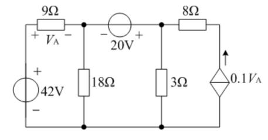
提示
受控电流源在右网孔外沿 → 右网孔电流被它钉死； 用左网孔电流表示
解答
三个网孔电流 均取顺时针。右侧受控源（↑，）把 钉死：
复盘
网孔电流被外侧电流源钉死时，直接写约束式代替该网孔的 KVL——不必硬套「网孔数 = 方程数」。
计 5（图 3.18）
用网孔法求 。只要求列写网孔电流方程，无需求解。
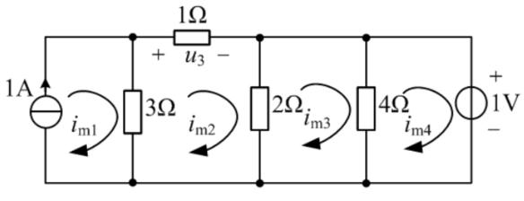
提示
1A 源在最左竖支路 → 网孔 1 的电流被钉死；u₃ 就是顶边 1Ω 的（网孔电流差）× 1Ω
解答
四个网孔电流 均按顺时针（与图示弧形箭头一致）。1A 源只属网孔 1：
复盘
列网孔方程的「自阻/互阻」口诀：自阻 = 网孔内电阻之和（恒正）；互阻 = 公共电阻（同向取正、 反向取负）；右边 = 网孔内电压源升的代数和。
计 6（图 3.19）
用节点电压法求各独立源发出的功率。
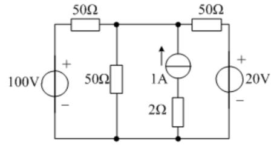
提示
顶线两个 50Ω 之间的两个竖支路顶端共节点（导线直连）；三个源的电流各由 KCL 定
解答
按图，顶线为 —50Ω——导线——50Ω—：中间两条竖支路（50Ω 与 1A 串 2Ω） 顶端同节点 ； 接 100V(+上)、 接 20V(+上)。中节点方程：
复盘
三个源三个答案、其中一个是负的（20V 源实际吸收）——「各独立源发出的功率」这类问法 必须逐源判发吸，不能默认都发电。顶线「导线直连」的节点合并是列方程前的必备动作。
计 7（图 3.20）
用节点电压法求电路中的电流 。
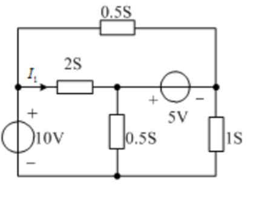
提示
与填空 3 是同一电路
解答
图 3.20 与图 3.7 相同，答案同填空 3：
复盘
超节点（5V 源跨 M、R）+ 已知节点（10V 源钉 L）+ 一个 KCL——第三章节点法的标准三件套 在这一题里全齐了。
计 8（图 3.21）
列出求解节点 1、2、3 的节点电压所需的节点电压方程（只列方程，无需求解）。
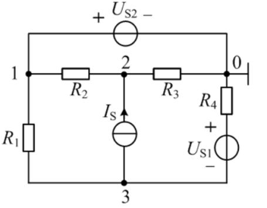
提示
Us2 直接跨在节点 1 与地之间 → 节点 1 的电压直接已知，「方程」变成约束式
解答
节点 0 为地。顶支路 1—Us2(+左−右)—0 为裸理想源：
复盘
三个节点只列两个 KCL + 一个约束——「节点电压已知的节点不再列方程」与「超节点」是一件事的 两个方向：源跨节点-地 → 直接已知；源跨两未知节点 → 超节点。
6. 小结
第三章把「列方程」从手艺变成了规程：
- 支路电流法： 个 KCL + 个 KVL（选 1–3、9，填 8）——方程最多，但它是另外两种 方法的推导起点。
- 节点电压法：自导相加、互导取负、注入代数和（选 6/10、填 3/6/9、计 1/3/6/7）；理想源跨 节点-地 = 直接已知，跨两未知节点 = 超节点（计 8）。
- 网孔/回路电流法：自阻恒正、互阻看方向（填 1、计 4/5）；电流源钉死网孔电流（计 4 的约束式）。
受控源在三法里都只做一件事：先当独立源写进方程，再把控制量用待求量表示回代（计 3/4）。
完成边界
- 已整理：第三章 28 题题面逐字转抄 + 配图 21 张入库；全部解答/方程组与复盘。
- 双签：2026-09-28，两名独立子代理只拿题面与配图重算 28 题：与整理者逐项对照，多数直接一致； 4 处按图/平衡修正（填 6 的 V、填 7 的 W（盲测 8 W 不满足功率平衡，被平衡表 否决）、计 1 的 V、计 6 的三源功率），两处读数分歧经定向裁决（图 3.9 的 6A 箭头、 图 3.14 的顶行连接）。计 6 附功率平衡校验。
- 〔待核对〕：① 选 7 两电压源的接法（本页按「直接跨下两边、无串阻」取 2 个方程；若带串阻为 4）； ② 填 5 已知量下标（小号斜体，按图确认为 、 两个电流源）；③ 计 3 的 按 6Ω 上 处理（题干与图标注字形有差）；④ 计 1、计 6 的顶行连接读数已做定向裁决，分数形答案 （52/55 V、170/3 V）建议对教材图复核。
- 未完成：第四至九章（按课程进度分章推进）。